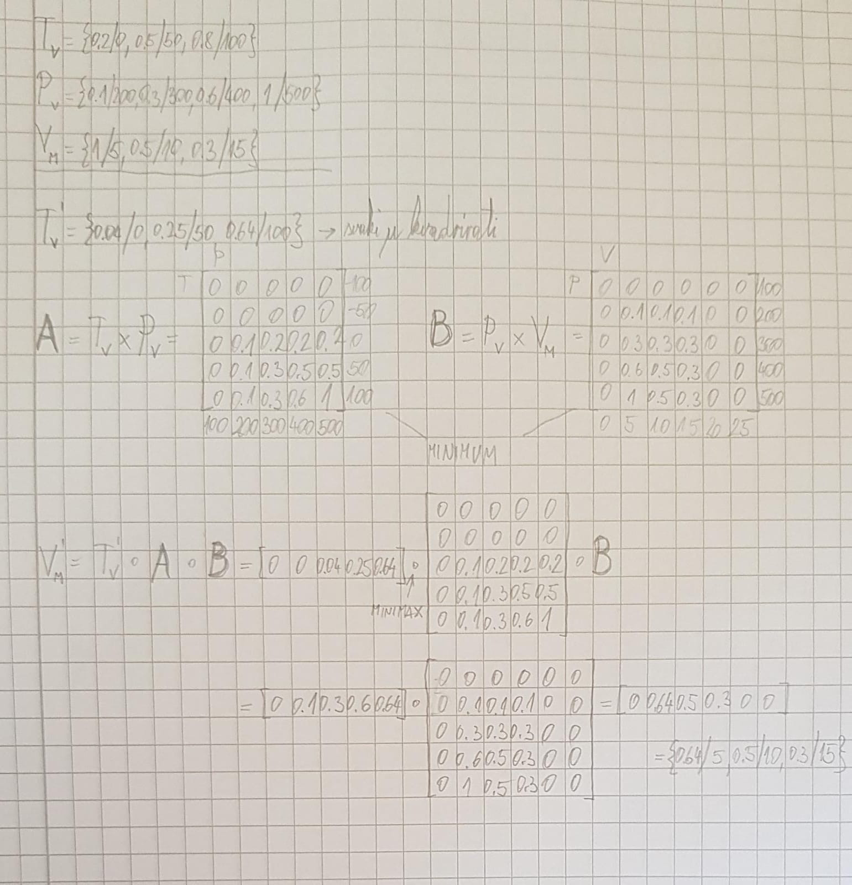

~~~~~~~~ evo za ovaj s neizrazitom

endyyyy ovdje se radi o tome da u PL mi ne znamo ništa o R iz klauzula, a u Prologu vrijedi da nešto ne može biti nepoznato, tj. sve što se ne može dokazati je lažno
ili možeš metodom eliminacije vidjeti da druga, treća i četvrta očito vrijede u PL